Galeri
Koleksi Foto
Momen yang Diabadikan
Beberapa foto dan momen yang saya abadikan. Klik foto untuk melihat lebih dekat.
 +Sunrise di Gunung Prau
+Sunrise di Gunung Prau
 +Puncak Gunung Prau 2590 MDPL
+Puncak Gunung Prau 2590 MDPL
 +Jalur Patak Banteng
+Jalur Patak Banteng
 +Menyambut sunrise di puncak
+Menyambut sunrise di puncak
 +View Dieng dari puncak
+View Dieng dari puncak
 +Gapura Patak Banteng
+Gapura Patak Banteng

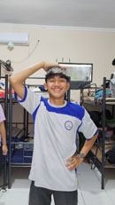
+Foto profil +Kegiatan lomba voli
+Kegiatan lomba voli

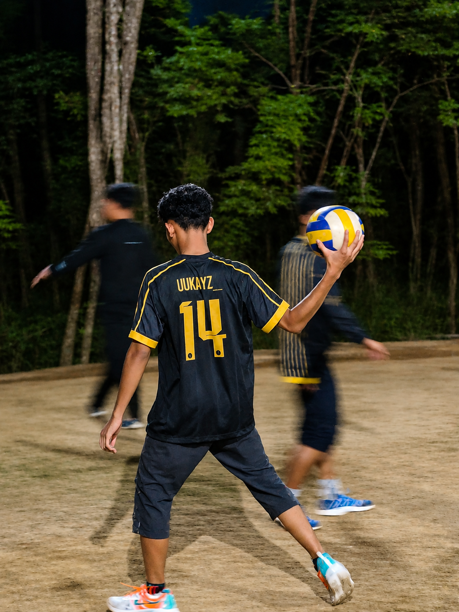
+Momen bermain bola voli
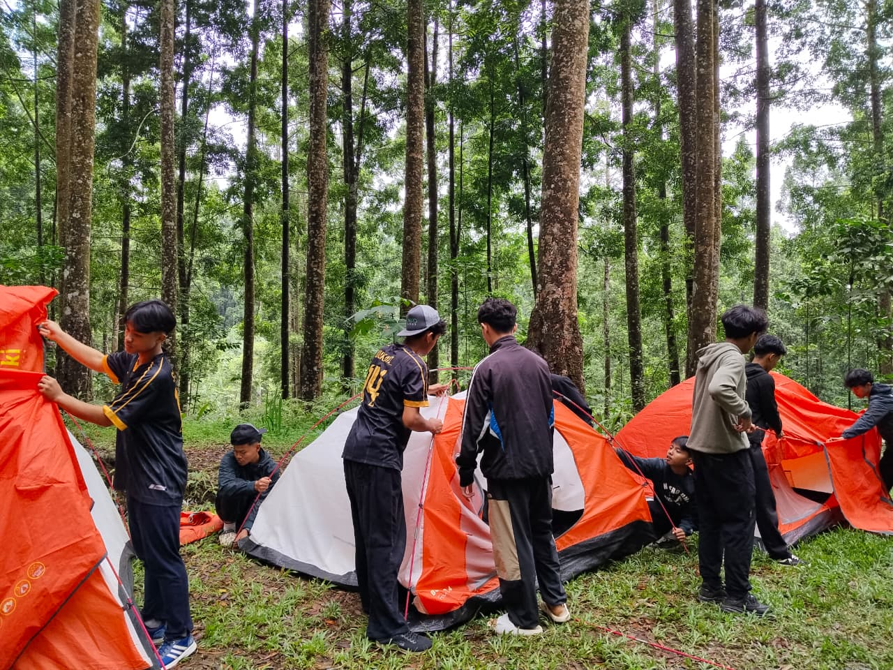
+Mendirikan tenda bersama teman
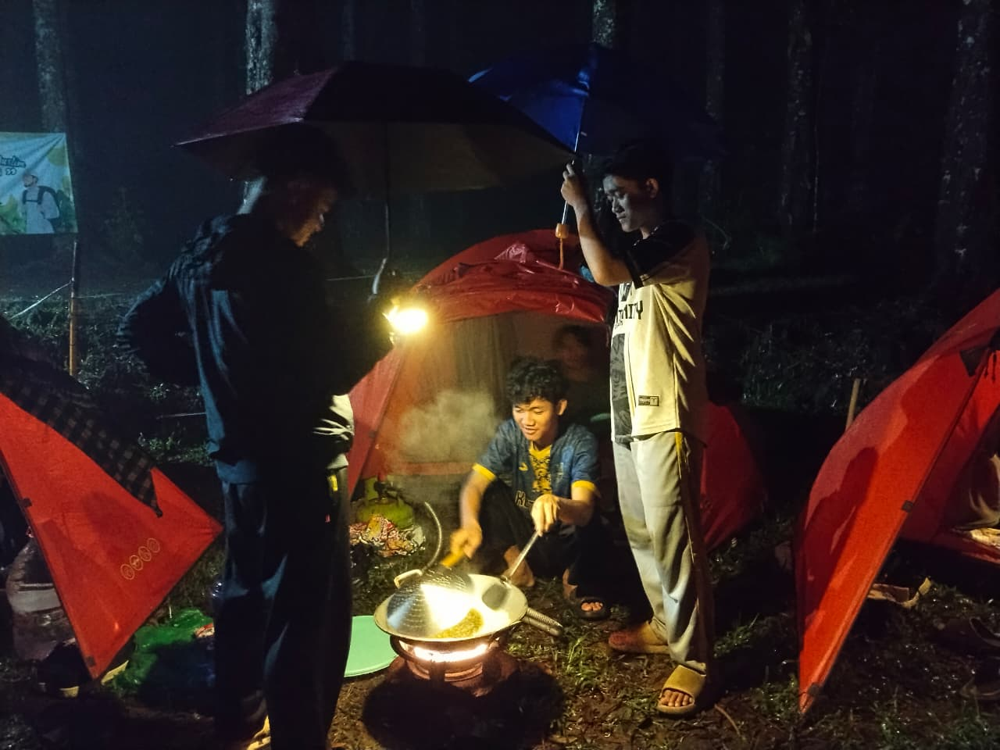
+Memasak bersama saat berkemah
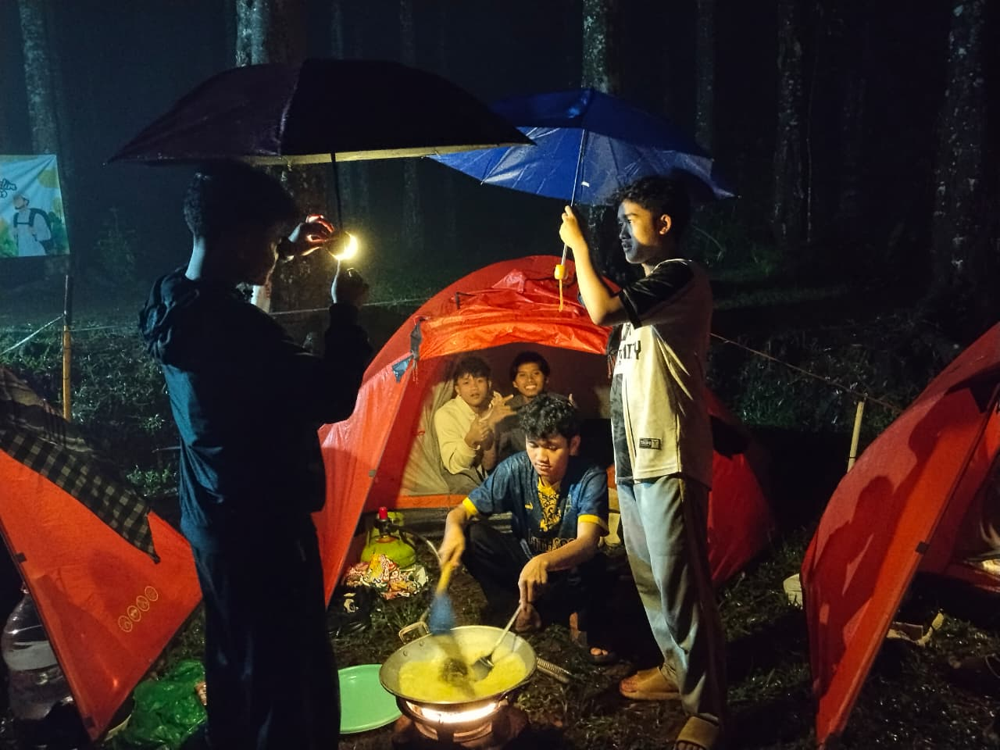
+Memasak bersama di malam hari
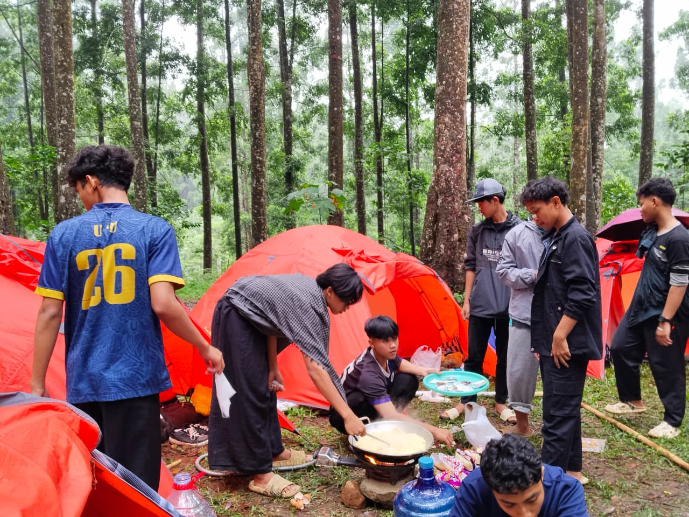
+Persiapan kegiatan berkemah
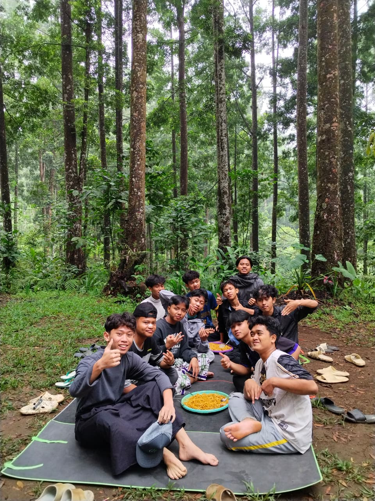
+Makan bersama saat berkemah
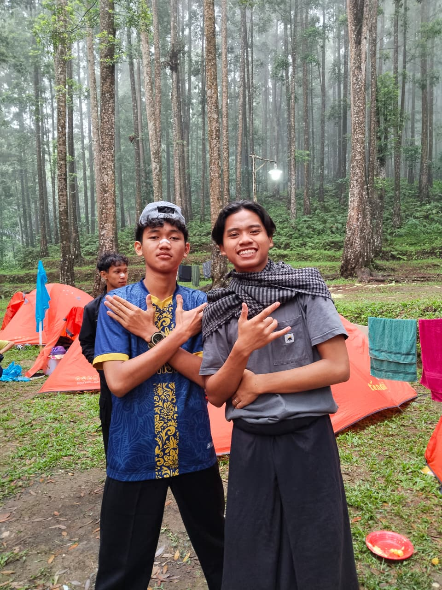
+Foto bersama di perkemahan
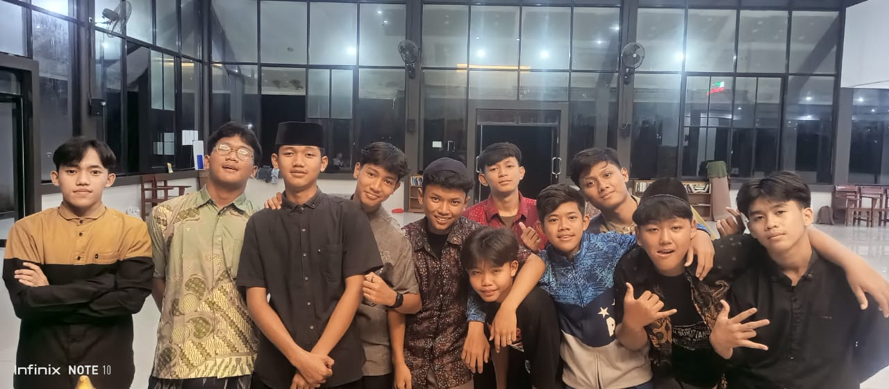
+Kebersamaan setelah kegiatan malam +Kegiatan futsal
+Kegiatan futsal
 +Foto bersama teman
+Foto bersama teman
 +Juara 2 futsal
+Juara 2 futsal
(2).jpeg) +Kebersamaan di hutan pinus
+Kebersamaan di hutan pinus
(2).jpeg) +Momen liburan di air terjun
+Momen liburan di air terjun
(2).jpeg) +Potret bersama di depan air terjun
+Potret bersama di depan air terjun
(2).jpeg) +Keseruan foto kelompok di air terjun
+Keseruan foto kelompok di air terjun
(2).jpeg) +Momen kebersamaan dan kekompakan
+Momen kebersamaan dan kekompakan
(2).jpeg) +Foto bersama saat beristirahat
+Foto bersama saat beristirahat
(3).jpg) +Momen seru dan kebersamaan
+Momen seru dan kebersamaan

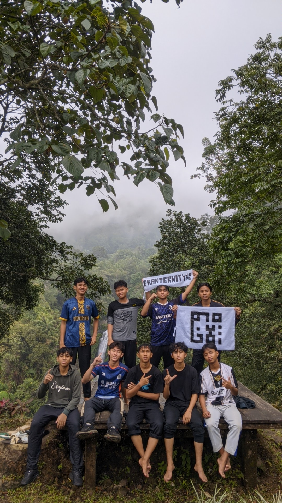
+Kebersamaan di alam terbuka
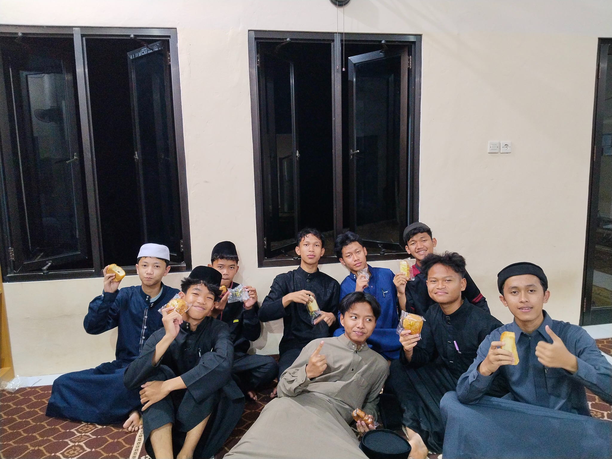
+Kumpul bersama teman
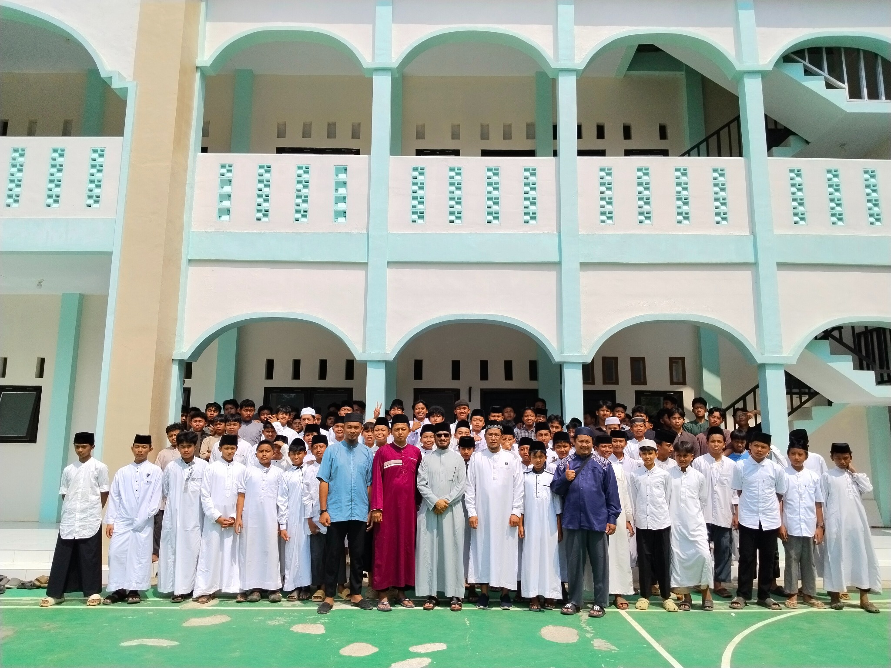
+Kebersamaan di sekolah
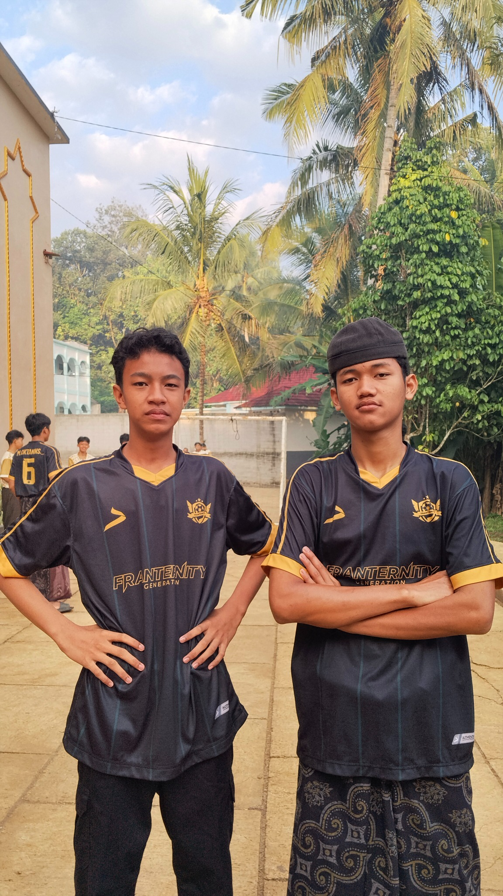
+Potret jersey Fraternity
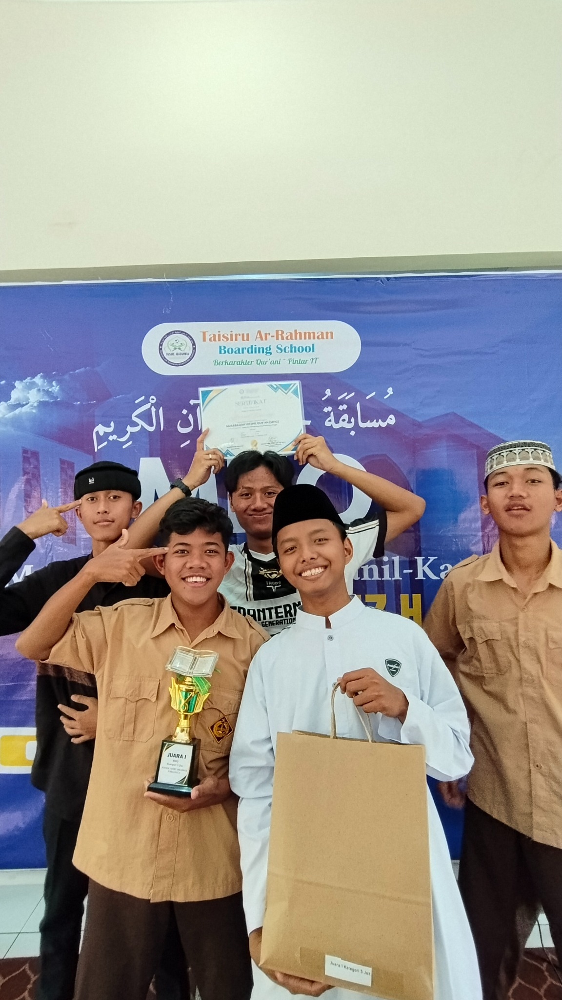
+Momen meraih prestasi
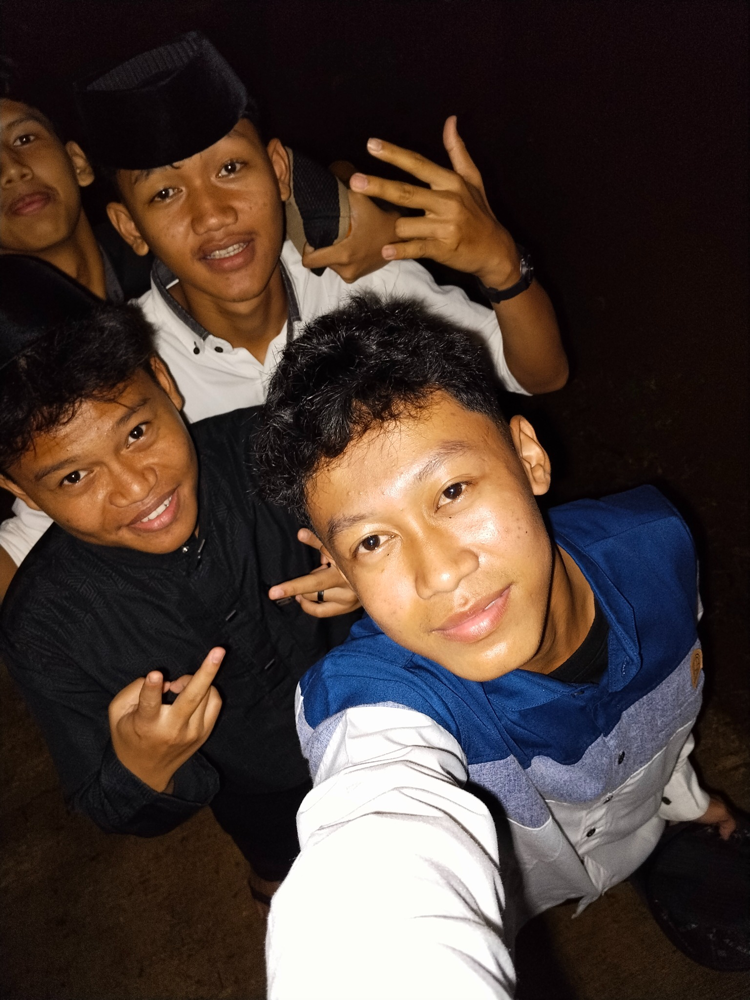
+Selfie bareng temanA glimpse into our world.